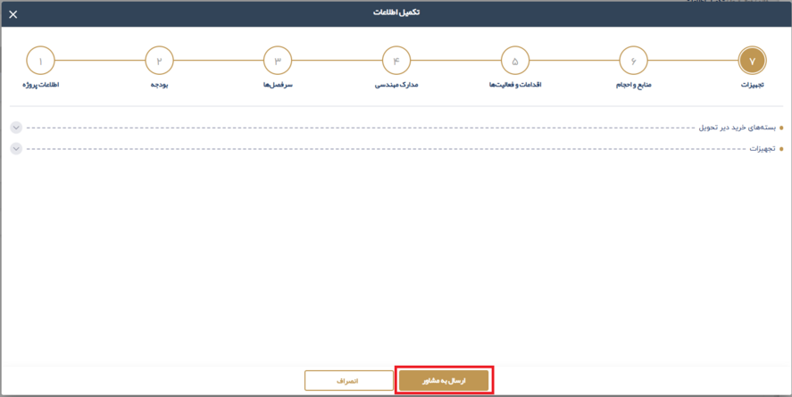

2.1.8. تاييد نهايي درخواست
در این قسمت، تا زمانی که پروژه به طور کامل تایید نشده (و به مشاور ارسال نگردیده باشد)، درخواست قابل ویرایش و حذف خواهد بود. اما پس از تایید نهایی، درخواست برای تایید به نماینده مشاور ارسال میشود و دیگر قابل تغییر یا حذف نخواهد بود.

وضعیت پروژه تا تایید و ارسال، در حالت ایجاد قرار دارد. پس از ارسال به مشاور، وضعیت کنونی پروژه و پیشرفت آن در این قسمت نمایش داده خواهد شد.